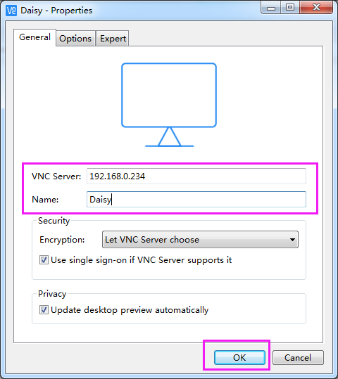
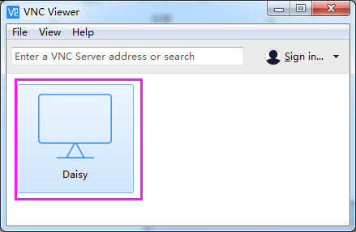

Note
Bonjour et bienvenue dans la Communauté Facebook des passionnés de Raspberry Pi, Arduino et ESP32 de SunFounder ! Plongez plus profondément dans l’univers des Raspberry Pi, Arduino et ESP32 avec d’autres passionnés.
Pourquoi rejoindre ?
Support d’experts : Résolvez les problèmes après-vente et les défis techniques avec l’aide de notre communauté et de notre équipe.
Apprendre et partager : Échangez des astuces et des tutoriels pour améliorer vos compétences.
Aperçus exclusifs : Accédez en avant-première aux annonces de nouveaux produits et aux aperçus.
Réductions spéciales : Profitez de réductions exclusives sur nos produits les plus récents.
Promotions festives et cadeaux : Participez à des cadeaux et des promotions de vacances.
üëâ Pr√™t √† explorer et √† cr√©er avec nous ? Cliquez [Ici] et rejoignez-nous aujourd‚Äôhui !
Bureau à distance
Il existe deux façons de contrôler le bureau du Raspberry Pi à distance :
VNC et XRDP, vous pouvez utiliser l’un ou l’autre.
VNC
Vous pouvez utiliser la fonction de bureau à distance via VNC.
Activer le service VNC
Le service VNC est installé dans le système. Par défaut, VNC est désactivé. Vous devez l’activer dans la configuration.
Étape 1
Saisissez la commande suivante :
sudo raspi-config

Étape 2
Choisissez 3 Options d’interfaçage en appuyant sur la touche fléchée vers le bas de votre clavier, puis appuyez sur la touche Entrée.

Étape 3
P3 VNC

Étape 4
Sélectionnez Yes -> OK -> Finish pour quitter la configuration.

Connexion à VNC
Étape 1
Vous devez télécharger et installer le VNC Viewer sur votre ordinateur personnel. Une fois l’installation terminée, ouvrez-le.
Étape 2
Sélectionnez ensuite "New connection".

Étape 3
Entrez l’adresse IP du Raspberry Pi et un Nom quelconque.
Étape 4
Double-cliquez sur la connexion que vous venez de créer :
Étape 5
Entrez le nom d’utilisateur (pi) et le mot de passe (raspberry par défaut).

Étape 6
Vous pouvez maintenant voir le bureau du Raspberry Pi :

C’est la fin de la partie VNC.
XRDP
Une autre méthode de bureau à distance est XRDP, qui fournit une connexion graphique aux machines distantes en utilisant le protocole RDP (Remote Desktop Protocol de Microsoft).
Installer XRDP
Étape 1
Connectez-vous au Raspberry Pi en utilisant SSH.
Étape 2
Saisissez les instructions suivantes pour installer XRDP.
sudo apt-get update
sudo apt-get install xrdp
Étape 3
Ensuite, l’installation commence.
Tapez "Y", puis appuyez sur la touche "Entrée" pour confirmer.

Étape 4
Une fois l’installation terminée, vous devez vous connecter à votre Raspberry Pi en utilisant les applications de bureau à distance de Windows.
Connexion à XRDP
Étape 1
Si vous êtes un utilisateur Windows, vous pouvez utiliser la fonction de bureau à distance incluse avec Windows. Si vous êtes un utilisateur Mac, vous pouvez télécharger et utiliser Microsoft Remote Desktop depuis l’App Store, et il n’y a pas beaucoup de différence entre les deux. L’exemple suivant concerne le bureau à distance de Windows.
Étape 2
Tapez "mstsc" dans Exécuter (WIN+R) pour ouvrir la Connexion Bureau à Distance, et entrez l’adresse IP du Raspberry Pi, puis cliquez sur "Connecter".

Étape 3
- Ensuite, la page de connexion xrdp apparaît. Veuillez saisir votre nom d’utilisateur et votre mot de passe.
Après cela, cliquez sur "OK". Lors de votre première connexion, votre nom d’utilisateur est "pi" et le mot de passe est "raspberry".

Étape 4
Vous êtes maintenant connecté avec succès à votre Raspberry Pi en utilisant le bureau à distance.

Avis de droits d’auteur
- Tous les contenus, y compris mais sans s’y limiter, les textes, les images et le code de ce manuel,
- sont la propriété de la société SunFounder. Vous devez les utiliser uniquement pour des études personnelles,
- des recherches, des loisirs ou d’autres objectifs non commerciaux ou à but non lucratif, conformément aux réglementations et aux lois sur les droits d’auteur en vigueur,
- sans porter atteinte aux droits légaux de l’auteur et des détenteurs de droits concernés.
- Pour toute personne ou organisation qui utilise ces contenus à des fins lucratives sans autorisation,
la société se réserve le droit d’intenter une action en justice.